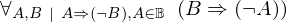
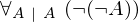

Show the Proof¶
In [1]:
import proveit
# Automation is not needed when only showing a stored proof:
proveit.defaults.automation = False # This will speed things up.
proveit.defaults.inline_pngs = False # Makes files smaller.
%show_proof
Out[1]:
| step type | requirements | statement | ||
|---|---|---|---|---|
| 0 | generalizaton | 1 | ⊢  | |
| 1 | deduction | 2 |  , ⊢ , ⊢ | |
| 2 | instantiation | 3, 4, 5, 6 | , ,  ⊢ ⊢  | |
 : , : : , :  | ||||
| 3 | theorem | ⊢  | ||
| proveit.logic.booleans.implication.modus_tollens_denial | ||||
| 4 | assumption | ⊢ | ||
| 5 | assumption | ⊢ | ||
| 6 | instantiation | 7, 8 | ⊢ | |
| : | ||||
| 7 | theorem | ⊢  | ||
| proveit.logic.booleans.negation.double_negation_intro | ||||
| 8 | assumption | ⊢ | ||